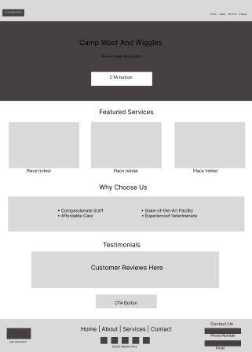
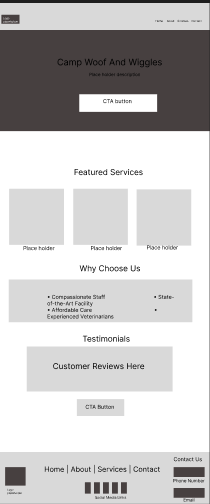

Research & Design

Created high-fidelity mockups of the app on desktop view to showcase layout, interaction, and visual hierarchy.

Developed a cohesive brand style guide including colors, typography, and visual language.

Created high-fidelity mockups of the app on mobile view to showcase layout, interaction, and visual hierarchy.